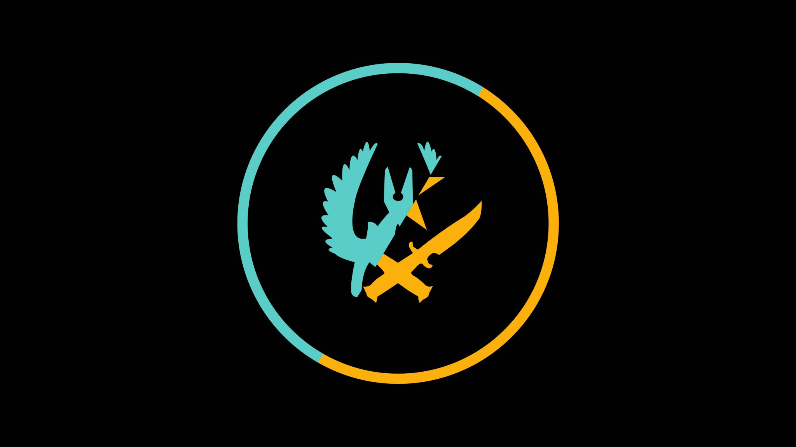

History
This story of this website all started when Jonathan Sarabosing got into Counter Strike Global Offensive, a popular multiplayer First Person Shooter. From there, ideas of teaching new and old players of the game became the basis for this website, CSGO Tips. It provides useful and up-to-date information regarding game tactics, mechanics, and even beginner lessons for those just getting into the game.